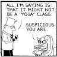
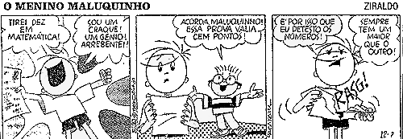

Plano de ensino
Algoritmos Probabilísticos
Jair Donadelli
Primeiro Quadrimestre de 2020
sala: A-113-0 Horário: 2a 10hs e 4a 08hs
Atendimento: Preferencialmente 2a 12hs -- 14hs, mas pode aparecer na
546-2 pra conversarmos em quase qualquer horário. Se preferir, por
garantia, me mande um email antes.
C.H.: 48hs.
Créditos: 4.
T-P-I: 4-0-ℵ0.
turma: DAMCZA035-14SA
|

|
Ementa:
Probabilidade discreta, Leis de grandes desvios,
Algoritmos probabilísticos clássicos: testes de primalidade; cortes
mínimos; roteamento no hipercubo; 2-sat e 3-sat; reconhecimento de
padrões em textos; emparelhamentos perfeitos; teste para nulidade de
polinômios em várias variáveis; conjuntos independentes maximais;
elemento majoritário de uma sequência; verificação de produto de
matrizes; teste de igualdade de conjuntos; escolha de líder em
redes. Classes de complexidade de algoritmos probabilisticos: BPP, RP e
ZPP. Sistemas interativos. Geradores pseudoaleatorios.
|


|

Objetivos:
Apresentar os modelos probabilísticos de
computação, seu poder e suas limitações, seu uso em problemas
computacionais conhecidos e as ferramentas mais comuns da probabilidade
para a análise de desempenho e limitação da probabilidade de
erro. Apresentar as classes de complexidade relacionados a essa modelo
e seus problemas mais importantes.
Referências bibliográficas:
Notas de aula (em
preparação): Cap1, Cap2,Cap3,Cap4,
-
Probablility and Computing, M. MITZENMACHER, E. UPFAL.
[518.1 MITZpr]
-
Randomized Algorithms, R. MOTWANI e P. RAGHAVAN. [004.015192
MOTWra]
- Design and Analysis of Randomized Algorithms, J. HROMKOVIC
[Livro Digital]
-
Finite Markov chains and algorithmic applications,
O. HÄGGSTRÖM. [511.8 HAGGfi]
-
Concentration of measure for the analysis of randomized
algorithms Dubhashi, Devdatt P. [518.1 DUBHco]
-
Probabilistic methods for algorithmic discrete mathematics,
HABIB, M (ed) et al. [511.6 HABp]
-
Reversible Markov Chains and Random Walks on GraphsDavid ALDOUS and James Allen FILL [pdf]
-
Random Walks on GraphsL. LOVÁSZ[pdf]
-
Useful inequalities cheat sheet
Método
Aulas expositivas; leitura de textos;
resolução de exercícios para estudo de temas específicos.
Avaliação:
(Em construção)
exercícios individualizados, trabalho teórico
com profundidade, eventualmente, trabalhos de implementação. O
conceito final de cada aluno não será o resultado de
alguma média feita a partir das avaliações. O resultado de
cada avaliação reflete o desempenho do aluno em todo o curso
até aquele instante. Isso significa que a cada conceito
atribuído durante o curso leva em conta o resultado das
avaliações até o momento. Não haverá prova substitutiva. O
exame de recuperação será no Q2, prova escrita com todo o
conteúdo, em data a ser combinada.

Todo aluno é encorajado a trabalhar em grupo, o trabalho em
grupo e a cooperação entre colegas é em geral benéfico e útil
ao aprendizado. O trabalho em grupo pressupõe uma discussão de
estratégias, você pode explicar como resolveu um ou outro
problema, que resultados usou, etc, no entanto você sempre deve
escrever as soluções por conta própria. O que você não deve
fazer é mostrar a sua solução.
Da mesma forma, você pode usar referências para ajudar a resolver
problemas, mas você deve escrever a solução por conta própria e citar
suas fontes.
Copiar soluções, no todo ou em parte, de outros alunos ou de qualquer
outra fonte sem reconhecimento é trapaça. Qualquer aluno que
esteja trapaceando receberá automaticamente uma nota F e será tomada
providências administrativas.

Programação:
(Em construção)
aula 01 - Administrativia. Prova conhecimento zero: toy example. Igualdade de Polinomios com uma variável.
aula 02 - Probabilidade discreta (espaço finito); sigilo perfeito; gerador de números aleatórios a partir de bits aleatórios [recomendo leitura das seções 1.1.1, 1.2, 1.4.2 das notas de aula, cap. 1]
Leitura recomendada: espaço produto [seção 1.4.1], lei das probabilidades totais [seção 1.3.1], exercícios [seção 1.5]
aula 03 - Probabilidade discreta (espaço infinito) [seção 1.1]. Variáveis aleatórias simples, esperança, distribuições Bernoulli e Geométrica [seções 3.1.1 e 3.1.3]
Leitura recomendada: seção 2.1.
aula 04 - uma lei de desvio para variável geométrica (exerc 3.5); fingerprint: teste de igualdade de duas strings binárias, algoritmo probabilístico para igualdade de matrizes. "principio da decisão adiada" [leitura da seção 1.5.3]
aula 05 - P, BPP e "desaleatorização", "desaleatorização" do algoritmo probabilístico para igualdade de matrizes usando matriz de Vandermonde. "principio da decisão adiada" [leitura da seção 1.5.3]
aula 06 - igualdade de polinômios varias variaveis. [seção 2.2.3]
aula 07 - Limitante inferior para ordenação baseada em comparações; distribuição binomial, linearidade da esperança [seção 3.1.1]; Tempo médio do Quicksort probabilistico [seção 3.1.4]
aula 08 - concentração da distribuição do nº de comparações do Quicksort probabilistico.
aula 09 - Corona s week, tarefa caseira: estudar as seções 3.1.2, 3.2.1 e 3.2.2 das notas de aula. Mande as dúvidas por email.
aula 10 - Corona s week, tarefa caseira: estudar as seções 3.3.3 das notas de aula. Mande as dúvidas por email.
=================== a disciplina parou aqui ====================================================
aula 11 - hashing
aula 12 - hashing; leis de desvios.
aula 13 - desaleatorização usando esperança condicional [leitura da seção 2.2.2]
aula 14 - skip-lists [leitura das seções 2.1.8 e 2.2.1].
aula 15 - skip-lists [leitura das seções 2.1.8 e 2.2.1, entregar na aula 18 os seguintes exercicios do final do cap. 2: 12, 19 e mais um ou dois escolhidos a partir do 3 (os escolhidos substituirão exercicios errados já entregues)].
aula 16 - desigualdades de Markov e Chebyshev [leitura da seção 3.2]
aula 17 - independência 2-a-2, hashing, hashing universal [leitura da seção 3.2.1]
aula 18 - aula de exercícios [execício para entrega: desaleatorização do max-cut usando independencia 2-a-2]
aula 19 - hashing leftover/mixing lemmas
aula 20 - cadeias de Markov
aula 21 - 2SAT e 3SAT
aula 22 - classificação de estados e "gambler ruin"
aula 23 - distribuicoes estacionarias, passeios aleatorios em grafos
aula 24 - s-t conexidade
links
Numbers that fool the Fermat test are called Carmichael numbers, and
little is known about them other than that they are
extremely rare. There are 255 Carmichael numbers below
100,000,000. The smallest few are 561, 1105, 1729, 2465,
2821, and 6601. In testing primality of very large numbers
chosen at random, the chance of stumbling upon a value that
fools the Fermat test is less than the chance that cosmic
radiation will cause the computer to make an error in
carrying out a "correct" algorithm. Considering an algorithm
to be inadequate for the first reason but not for the second
illustrates the difference between mathematics and
engineering.
Abelson& Sussman
FIM